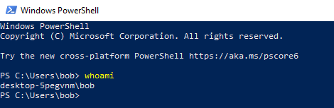
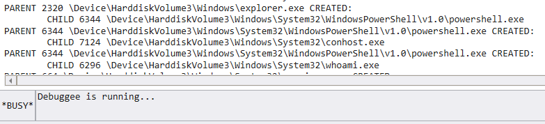

# Process Creation
•
https://docs.microsoft.com/en-us/windows-hardware/drivers/ddi/ntddk/nf-ntddk-pssetcreateprocessnotifyroutine•
https://docs.microsoft.com/en-us/windows-hardware/drivers/ddi/ntddk/nc-ntddk-pcreate_process_notify_routinePsSetCreateProcessNotifyRoutine notifies the driver about new & terminated processes.
A debuggee machine is running our driver.
A debugger machine is running WinDbg and is connected to the debuggee machine.
On the debuggee machine running our driver I start
powershell and run
whoamiBack on the debugger machine, we see the output from our kernel driver in WinDbg.
PID
2320 named
explorer.exe created the process
6344 named
powershell.exe.
This is me starting PowerShell. (ignore conhost)
Then, PID
6344 -
powershell.exe - creates process
6296 named
whoami.exe.
We can monitor all of this as a result of
PsSetCreateProcessNotifyRoutine.
#include <ntifs.h>
#include <ntddk.h>
#include <wdf.h>
/*
Routine that runs on process creation.
*/
void notify_CreateProcess(HANDLE parent_id, HANDLE process_id, BOOLEAN process_created)
{
if (process_created == TRUE)
{
PEPROCESS process_info = NULL;
PUNICODE_STRING parent_name = NULL;
PUNICODE_STRING process_name = NULL;
// parent
// grab EPROCESS struct
PsLookupProcessByProcessId(parent_id, &process_info);
// grab process name from EPROCESS struct (undocumented)
SeLocateProcessImageName(process_info, &parent_name);
// child
// grab EPROCESS struct
PsLookupProcessByProcessId(process_id, &process_info);
// grab process name from EPROCESS struct (undocumented)
SeLocateProcessImageName(process_info, &process_name);
DbgPrint("PARENT %d %wZ CREATED:\n\t\tCHILD %d %wZ \n", parent_id, parent_name, process_id, process_name);
}
else if (process_created == FALSE)
{
DbgPrint("parent %d deleted %d \n", parent_id, process_id);
}
return;
}
void DriverUnload(PDRIVER_OBJECT DriverObject)
{
UNREFERENCED_PARAMETER(DriverObject);
// remove set notifications
PsSetCreateProcessNotifyRoutine(notify_CreateProcess, TRUE);
DbgPrint("driver unloaded \n");
return;
}
NTSTATUS DriverEntry(PDRIVER_OBJECT DriverObject, PUNICODE_STRING RegistryPath)
{
UNREFERENCED_PARAMETER(DriverObject);
UNREFERENCED_PARAMETER(RegistryPath);
NTSTATUS nt_status = STATUS_SUCCESS;
DriverObject->DriverUnload = DriverUnload;
// start
DbgPrint("driver loaded \n");
// notifications
nt_status = PsSetCreateProcessNotifyRoutine(notify_CreateProcess, FALSE);
return nt_status;
}